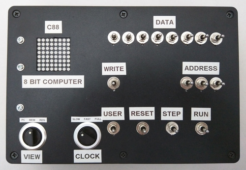
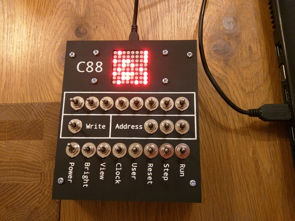
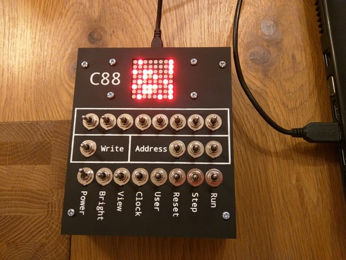

Anonymity controls
Some potentially identifying information has been redacted from this CV, some links to external sources with identifying information may remain.
Names of institutions or companies have been redacted from this CV, some links to external sources that identify these institutions may remain.
My Hobbies (AKA: The fun part of my CV)
In my free time, I enjoy making things. I have way too many crazy ideas, and not enough free time to make them all. Some of the things I make are software tools, most of which are available from my github page. I also sometimes do hardware projects. I can't possibly list all of my projects here, but some of the highlights are listed below, in no particular order.
A Giant Playable LED Rubik's Cube
Exactly what it sounds like. It's about 1.5m tall, has paddles for user input, a timer display, sound effects. I took it to EMF Camp in 2022 and let people play with it.
{kind=link}
{kind=link}
Using formal proof tools to play Among Us
I used the SMT solver Z3 to solve for the hidden game state in a given instance of the popular online multiplayer social deduction game 'Among Us'.
I wrote a tool that allows you to input all the information that you learn during the game, and it counts the number of models it can find for each player where that player is the impostor. It does this by generating a boolean expression that is true for all valid game states (including the hidden state) and passes that to Z3 to find models for it. The aim of the game is to find the impostors, and so this tool could aid you when playing the game by telling you who the impostors are or who they are likely to be. The only problem is that when I tried using it for that, I found it was almost never helpful. I became familiar with Z3 and SMT at work (at Arm) and decided it would be fun to create an interesting but impractical tool using a sophisticated solver just as a demo.
This project is on github here: https://github.com/lexbailey/solver_for_among_us[link text contains username, redacted for anonymity]
C88, A Hobby-Project CPU in an FPGA
One hardware project that I would particularly like to show off is a really tiny CPU that I designed. It's called C88. It was inspired by the Small Scale Experimental Machine (SSEM) built in Manchester around 1948. It has only 8 bytes of RAM (that's right, only 8 bytes, I told you it was small). It has a front panel of switches to manually load a program into the machine byte by byte, and has a display that can show the internal state of the machine, in a way very similar to the SSEM. It can show the contents of the RAM, and the values of the one internal register and the program counter. It also has a GPIO port and a small library of programs. There's a dice roll program (randomly chooses a number from 1 to 6), a "steady hand" game played with a rotary encoder attached to the GPIO which needs to be turned at a constant rate to increase your score, and a few other fun programs.
You can find on my github page several repositories related to this CPU. One of them is the main repository with VHDL code for use on an FPGA. Another is a simulator written in Javascript, mostly written by a friend of mine. And lastly there is a Dynamic Binary Translator (DBT) which enables you to run C88 programs on an Arm Cortex-M Microcontroler.
Below are some photos of the two different physical implementations of the C88. The first two photos show the FPGA implementation, and the last one is of the DBT implementation running on an Arduino Zero in a fancier and slimmer case.
{kind=link}
 

{kind=link}
My C88, and another processor I was working on, have both been featured multiple times in computer magazines. Details available at these links:
- https://freelance.halfacree.co.uk/2016/06/custom-pc-issue-155/
- https://freelance.halfacree.co.uk/2018/01/custom-pc-issue-174/
- https://freelance.halfacree.co.uk/2018/02/hackspace-magazine-issue-4/
The associated git repositories are on github at these URLs:
- Main VHDL implementation: https://github.com/lexbailey/C88[link text contains username, redacted for anonymity]
- DBT implementation: https://github.com/lexbailey/c88_dbt_zero[link text contains username, redacted for anonymity]
- JS Simulator: https://github.com/lexbailey/c88-js[link text contains username, redacted for anonymity]
There is also an instance of the JS simulator on the web for you to play with: http://lexbailey.github.io/c88-js/[link text contains username, redacted for anonymity]
Spacehack, a multiplayer cooperative console game
Another hardware project I have done, with a group of friends from York Hackspace, was a project to build a multiplayer cooperative game where players must communicate quickly with each other in order to try and save a spaceship from its inevitable doom. This is implemented as four large consoles of buttons, knobs, and switches, which must be manipulated at the right times. It runs on a Raspberry Pi and four BeagleBone embedded computers. This was called "Spacehack". We have taken this game to many Maker Faires and Maker Faire style events over the years.
There is some information (not much) about spacehack on York Hackspace's website here: https://york.hackspace.org.uk/spacehack/
There's also an article by Make Magazine here: https://makezine.com/2014/04/26/playing-spacehack-at-maker-faire-uk/ (There was a video there too, but sadly it is no longer available)